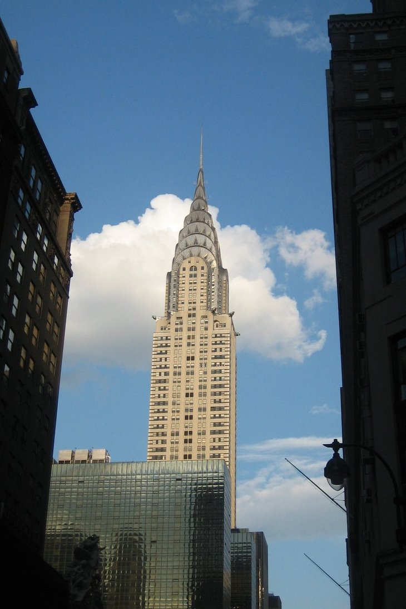

Life | Definition of Life by Merriam-Webster
 SINCE 1828 GAMES BROWSE THESAURUS WORD OF THE DAY WORDS AT PLAY LOG IN REGISTER settings SAVED WORDS Login or Register Hello,GAMES BROWSE THESAURUS WORD OF THE DAY WORDS AT PLAY SETTINGS SAVED WORDS view recents
life
noun Save Word \ ˈlīf \ plural lives \ ˈlīvz \Definition of life
(Entry 1 of 2)
1 a : the quality that distinguishes a vital and functional being from a dead body b : a principle or force that is considered to underlie the distinctive quality of animate beings c : an organismic state characterized by capacity for metabolism (see metabolism sense 1 ), growth, reaction to stimuli, and reproduction 2 a : the sequence of physical and mental experiences that make up the existence of an individual children … are the joy of our lives Agnes S. Turnbull b : one or more aspects of the process of living sex life of the frog 3 : biography sense 1 the life of George Washington 4 : spiritual existence transcending (see transcend sense 1c ) physical death his craving … for the release into the life to come Rodney Gilbert 5 a : the period from birth to death b : a specific phase of earthly existence adult life c : the period from an event until death a judge appointed for life d : a sentence of imprisonment for the remainder of a convict's life 6 : a way or manner of living the life of the colonists 7 : livelihood The fishing village drew its life from the sea. 8 : a vital or living being specifically : person many lives were lost in the disaster 9 : an animating and shaping force or principle the life of the constitution … has been not logic but experience F. A. Ogg & Harold Zink 10 : spirit , animation saw no life in her dancing 11 : the form or pattern of something existing in reality painted from life 12 : the period of duration, usefulness, or popularity of something the expected life of the batteries 13 : the period of existence (as of a subatomic particle) — compare half-life 14 : a property (such as resilience (see resilience sense 1 ) or elasticity) of an inanimate (see inanimate sense 1 ) substance or object resembling the animate quality of a living being 15 : living beings (as of a particular kind or environment) forest life 16 a : human activities b : animate activity and movement stirrings of life c : the activities of a given sphere, area, or time the political life of the country 17 : one providing interest and vigor life of the party 18 : an opportunity for continued viability gave the patient a new life 19 capitalized , Christian Science : god sense 1b 20 : something resembling animate life a grant saved the project's lifelife
adjectiveDefinition of life (Entry 2 of 2)
1 : of or relating to animate being 2 : lifelong a life member 3 : using a living model a life class 4 : of, relating to, or provided by life insurance a life policy Synonyms More Example Sentences Learn More about lifeKeep scrolling for more
Synonyms for life
Synonyms: Noun
bio , biography , memoir Visit the Thesaurus for MoreExamples of life in a Sentence
Noun He believes that God gives life to all creatures. She was happy and healthy for most of her life . The people in her family tend to have long lives . I've known her all my life . He is nearing the end of his life . People can expect to change jobs several times in their life . They've been waiting their whole life for an opportunity like this. What do you really want out of life ? All this paperwork has made life much more difficult. The details of everyday life can be fascinating. Adjective the life force in all things He was given a life sentence in prison. See More Recent Examples on the Web: Noun Delmonte was also taken to the hospital for non- life -threatening injuries, police wrote. Anchorage Daily News , "Man arrested after stabbings in Valdez bar," 22 Mar. 2021 Three people on the motorcycles died and passengers in the SUVs were taken to the hospital for non- life -threatening injuries, the department said. Audrey Jensen, The Arizona Republic , "3 people riding motorcycles die in crash with two SUVs in Sierra Vista area," 21 Mar. 2021 This talk with my sons unfortunately comes with my brother's real- life example. Bridgett Floyd, Allure , "Bridgett Floyd on Life Since Her Brother George Floyd's Death," 21 Mar. 2021 The films reflect the real- life challenges of altering the perspective of others — and ourselves. San Diego Union-Tribune , "‘The History of Joy’ film series captures real-life stories of struggles and successes," 21 Mar. 2021 In Peter Bogdanovich’s bittersweet road movie, a conman (Ryan O’Neal) and an outspoken orphan (Ryan’s real- life daughter, Tatum) become partners in crime. Radhika Seth, Vogue , "11 of the Youngest Acting Nominees in Oscar History," 21 Mar. 2021 In the short term, the federal checks will be life -changing for many, especially those with families. BostonGlobe.com , "COVID is still with us. So are the bread lines.," 20 Mar. 2021 The woman behind The Unbridled Retreat is host Devon Combs, a real- life horse whisperer who believes healing and awakening can come from working with horses. Katie Jackson, Travel + Leisure , "11 Transformative Retreats for the Woman With Wellness on Her Mind," 20 Mar. 2021 While online gaming will likely drop off, some habits and friendships will carry on even when real- life hangouts are an option again. Washington Post , "They laughed, they cried, they killed monsters: How friendships thrived in video games during the pandemic," 20 Mar. 2021 Recent Examples on the Web: Adjective The student, who is described as having non- life threatening injuries, was taken to a hospital. William Thornton | Wthornton@al.com, al , "East Limestone student struck by vehicle while boarding school bus," 11 Mar. 2021 However, there were fewer accidents and fewer people sustaining non- life threatening injuries, department spokesman MJ Thim said. Mark Thiessen, Star Tribune , "Second winter: Anchorage gets up to 18 inches of fresh snow," 11 Mar. 2021 The man driving the pickup truck was taken to the University of Louisville Hospital with what appear to be non- life threatening injuries, according to Ruoff's statement. Emma Austin, The Courier-Journal , "Driver killed in Louisville crash on Dixie Highway Tuesday night, police say," 10 Mar. 2021 The 17-year-old driver of the Lamborghini, whose identity police withheld due to his age, was also hospitalized with non- life threatening injuries. James Queally, Los Angeles Times , "Teen could face manslaughter charge in controversial high-speed crash that left woman dead in West L.A.," 10 Mar. 2021 Second, the governor, his allies Lt. Gov. Dan Patrick and Attorney General Ken Paxton and many of their fellow legislators claim to be pro- life . Dallas News , "Letters to the Editor - Opening up Texas, ‘Eyes of Texas,’ For the People Act, Shingle Mountain, vaccine process," 4 Mar. 2021 The Marine is receiving treatment for non- life threatening injuries at Scripps Memorial Hospital La Jolla, Motz said. Andrew Dyer, San Diego Union-Tribune , "Marine hospitalized after alleged assault on Camp Pendleton, authorities say," 4 Mar. 2021 The victim, whose name was not released, suffered non- life threatening injuries during the incident that unfolded around 1:30 a.m. near the intersection of Fifth and Spring streets, police said in a statement. Globe Staff, BostonGlobe.com , "Cambridge police officer on patrol comes to aid of shooting victim," 2 Mar. 2021 In one piece of good news, Tiger Woods is recovering from what appear to be non- life threatening injuries as a result of his serious car crash. NBC News , "Health experts urge spring Covid caution, FBI intel failures in spotlight, plus latest on Tiger Woods," 24 Feb. 2021These example sentences are selected automatically from various online news sources to reflect current usage of the word 'life.' Views expressed in the examples do not represent the opinion of Merriam-Webster or its editors. Send us feedback .
See MoreFirst Known Use of life
Noun
before the 12th century, in the meaning defined at sense 1a
Adjective
before the 12th century, in the meaning defined at sense 1
History and Etymology for life
Noun and Adjective
Middle English lif , from Old English līf ; akin to Old English libban to live — more at live
Keep scrolling for more
Learn More about life
Share life
Post the Definition of life to Facebook Share the Definition of life on TwitterTime Traveler for life
The first known use of life was before the 12th century
See more words from the same century
Dictionary Entries near life
lievrite
lie with
Lifar
life
life s ambition
life s work
life-affirming
See More Nearby EntriesPhrases Related to life
(as) big as life
(as) large as life
a dog s life
a fight for one s life
a life of leisure
a matter of life and death
a new lease on life
Statistics for life
Last Updated
24 Mar 2021
Look-up Popularity
Cite this Entry
“Life.” Merriam-Webster.com Dictionary , Merriam-Webster, https://www.merriam-webster.com/dictionary/life. Accessed 24 Mar. 2021.
Style: MLA MLA Chicago APA Merriam-WebsterKeep scrolling for more
More Definitions for life
life
nounEnglish Language Learners Definition of life
(Entry 1 of 2)
: the ability to grow, change, etc., that separates plants and animals from things like water or rocks : the period of time when a person is alive : the experience of being alivelife
adjectiveEnglish Language Learners Definition of life (Entry 2 of 2)
: of or relating to life : done as long as a person lives : existing or lasting throughout a person's lifeSee the full definition for life in the English Language Learners Dictionary
life
noun \ ˈlīf \ plural lives \ ˈlīvz \Kids Definition of life
1 : the state characterized by the ability to get and use energy, reproduce, grow, and respond to change : the quality that plants and animals lose when they die 2 : the period during which a person or thing is alive or exists 3 : all the experiences that make up the existence of a person : the course of existence I never heard of such a thing in my life ! 4 : existence as a living being He saved my life . 5 : a way of living We studied the life of the ant. 6 : the time when something can be used or enjoyed the life of a battery 7 : energy and spirit They gave the party some life . 8 : biography
life
noun \ ˈlīf \ plural lives \ ˈlīvz \Medical Definition of life
1 a : the quality that distinguishes a vital and functional plant or animal from a dead body b : a state of living characterized by capacity for metabolism, growth, reaction to stimuli, and reproduction 2 a : the sequence of physical and mental experiences that make up the existence of an individual b : a specific part or aspect of the process of living sex life adult life
Other Words from life
lifeless \ ˈlīf-ləs \ adjectiveKeep scrolling for more
More from Merriam-Webster on life
Thesaurus: All synonyms and antonyms for life
Nglish: Translation of life for Spanish Speakers
Britannica English: Translation of life for Arabic Speakers
Britannica.com: Encyclopedia article about life
Comments on life
What made you want to look up life ? Please tell us where you read or heard it (including the quote, if possible).
Show Comments Hide CommentsWORD OF THE DAY
quash
See Definitions and Examples
Get Word of the Day daily email!
Test Your Vocabulary
Up in the Sky: A Quiz
What language does the word sky come from? Portuguese Swedish Old Norse GreekTest your vocabulary with our 10-question quiz!
TAKE THE QUIZSpell words. Make bears.
TAKE THE QUIZ Love words? Need even more definitions?Subscribe to America's largest dictionary and get thousands more definitions and advanced search ad free!
Merriam-Webster unabridged Words at Play 'Everyday' vs. 'Every Day'Everyday words, confused every single day
On 'Moral' and 'Morale'The difference between what is right and what fee...
The Words of the Week - 3/19/2021Words from the week of 3/19/2021
On 'Currant,' 'Current,' and 'Courant'We're raisin' the issues of the day.
Ask the Editors We're intent on clearing it up We're gonna stop you right there How to use a word that (literally) drives some pe... The awkward case of 'his or her' Word Games Up in the Sky: A QuizIt s a bird? It s a plane? No, I m really asking....
Take the quiz Confusing Words—A QuizUpdated with more commonly confused words!
Take the quiz How Strong Is Your Vocabulary?Test your vocabulary with our 10-question quiz!
Take the quizPlay the game Merriam Webster
Learn a new word every day. Delivered to your inbox!
OTHER MERRIAM-WEBSTER DICTIONARIES
LEARNER'S ESL DICTIONARY VISUAL DICTIONARY SCRABBLE ® WORD FINDER MERRIAM-WEBSTER'S UNABRIDGED DICTIONARY BRITANNICA ENGLISH - ARABIC TRANSLATION NGLISH - SPANISH-ENGLISH TRANSLATIONFOLLOW US
Facebook Twitter YouTube Instagram Browse the Dictionary: a b c d e f g h i j k l m n o p q r s t u v w x y z 0-9 Home Help Apps About Us Shop Advertising Info Dictionary API Contact Us Join MWU Videos Word of the Year Puku Vocabulary Resources Law Dictionary Medical Dictionary Privacy Policy Terms of Use Do Not Sell My Info Browse the Thesaurus Browse the Medical Dictionary Browse the Legal Dictionary© 2021 Merriam-Webster, Incorporated
Learn More from M-W